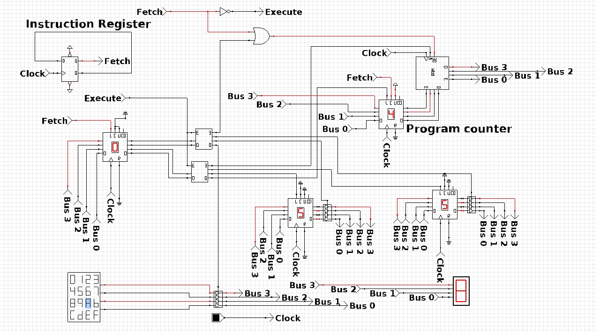

Analysis and Evidence of Own Skills
Education Background
(2014 - 2021)
Cambridge (I.G.C.S.E) - Joyce Banda Foundation (J.B.F), Malawi
Obtained Cambridge IGCSE O Level Certificate in 2021
(2022 - 2023) Nottingham Trent International Collage (NTIC).
Obtained a Foundation certificate 2 terms for computing
(2021 - 2022)
Work Training
Awarded Saint Jon's First Aid Certificate in 2022 (including CPR training)
Completed Sales Trainee Certificate in 2022 (focused on sales techniques and customer handling)
(2023 - 2026)
Nottingham Trent University
Currently Studying BCs of Computer Science (1st Year).
Work Experience:
(07/2021 - 01/2023)
Rainbow Paints Ltd Mw, Malawi.
Positions Sales, IT (E.O), Warehouse Manager, and Accounts
Gained experience and skills in various departments, including sales, IT, warehouse management, and accounts.
Received training in First Aid, Sales and Forklift during employment.
(06/2023 – Till Date)
The Range, United Kingdom (Retail Assistant).
Experience and skills in communication, time keeping and discipline.
Understood that stores operate differently in the UK than it is in Malawi.
Circuit with connected program counter

This circuit with a connected program counter is a key component in a CPU. It keeps track of the memory address of the next instruction to be executed.
During the instruction fetch cycle, the program counter outputs this address, and after each instruction is fetched, it increments to point to the next one.
This process repeats, allowing the CPU to execute instructions in sequence. The program counter can also be modified to branch or jump to different addresses,
enabling conditional execution and looping in programs. Overall, it ensures the smooth flow of instructions in the CPU. This one the knowladge
i gained while doing the labs for my module in Tech